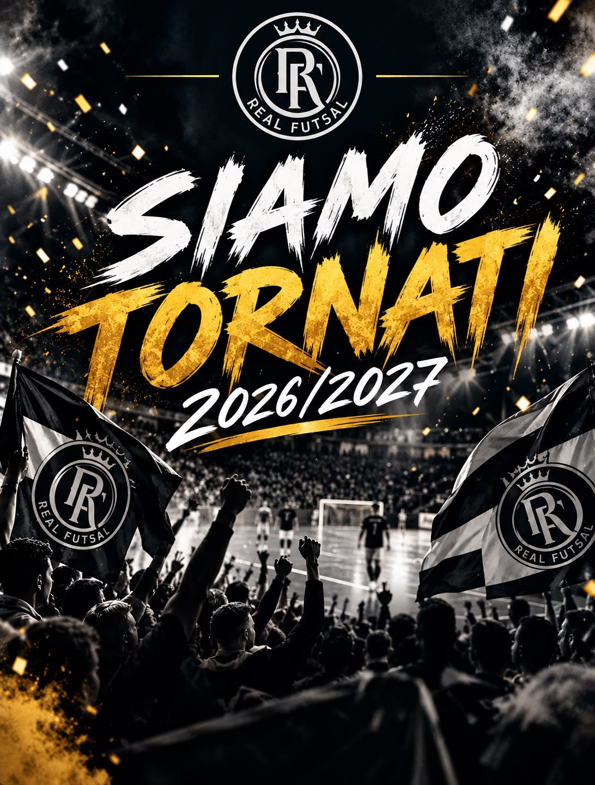
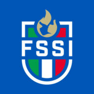

Onori & Storia
Palmarès
Dal nulla al tetto d'Europa. La storia di un club che ha portato Lido di Noto sul palcoscenico internazionale del futsal sordi.
 •
•
 •
•
 •
•


Dal nulla al tetto d'Europa. La storia di un club che ha portato Lido di Noto sul palcoscenico internazionale del futsal sordi.
La bacheca
Stagione 2025/2026 — primo titolo europeo del futsal silenzioso.
Oro nelle stagioni 2024/2025 e 2025/2026.
Oro nelle stagioni 2023/2024 e 2024/2025.
Campioni d'Italia Under 21 nella stagione 2024/2025.
Stagione 2025/2026
Il 17 gennaio 2026, al Pala Roma di Montesilvano, la Real Fut5al conquista la DCL alla prima partecipazione: CDS Huelva battuto 7–5 in finale.


Albo d'Oro
Tre stagioni, 11 medaglie: 6 ori, 4 argenti e 1 bronzo. Albo d’oro ufficiale del 9 maggio 2026.
La bacheca in foto
Segui il club verso il primo Scudetto FSSI e la difesa del titolo europeo.
Ultime news